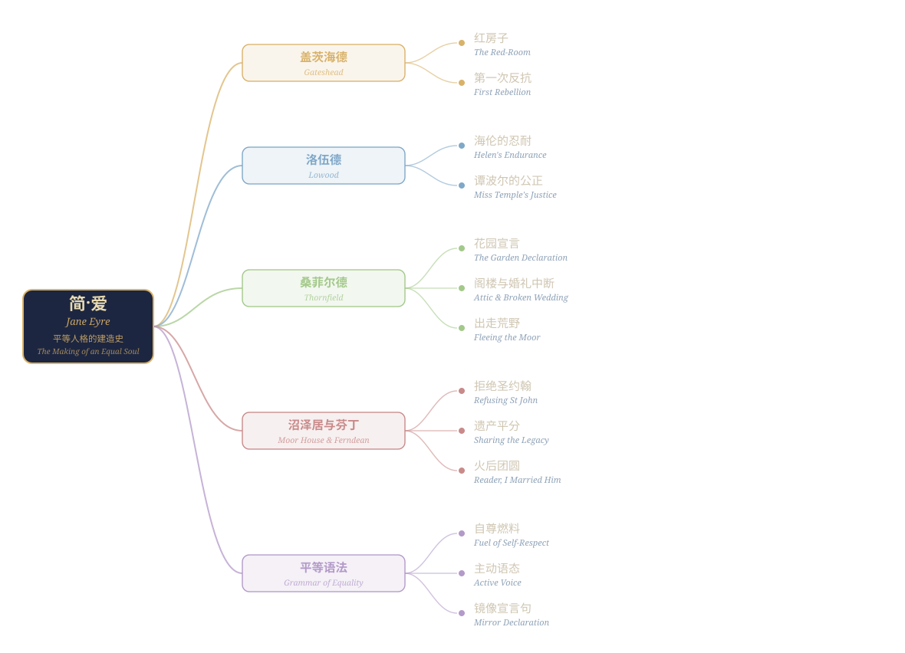

简·爱
〇 · 书籍信息
基本信息
| 书名 | 《简·爱》（Jane Eyre）——用女主人公的名字当书名，在 1847 年是一种宣言：女人的人生不是她嫁给了谁，是她自己叫什么 |
|---|---|
| 作者 | 夏洛蒂·勃朗特（1816–1855），牧师家的次女，与妹妹艾米莉（呼啸山庄）、安妮同登文学史。本书初版署男性化笔名 Currer Bell——她用假名换来的真话，比任何真名都响 |
| 结构 | 五个地点五段成长：盖茨海德（童年受虐）→ 洛伍德（寄宿学校）→ 桑菲尔德（爱情与真相）→ 沼泽居（拒绝无爱的求婚）→ 芬丁（团圆）——地理即成长阶段，一张地图读完一个灵魂的建造史 |
| 体裁 | 成长小说 + 哥特元素 + 第一人称「自述」：简对读者直呼 Reader——她不是被讲述的人物，是自任辩护律师的当事人 |
| 一句话 | 「我不是鸟，也没有罗网困住我；我是一个有独立意志的自由人。」——贫穷、平凡、矮小的家庭女教师，靠一句话把婚姻从恩典改写成平等。 |
一 · 核心主题总览
五个地点的旅程里埋着四组母题：① 平等（全书的脊梁）
桑菲尔德花园那场求婚宣言是文学史的宪法时刻：灵魂在上帝面前平等——「我们的灵魂是平等的，就仿佛我们都经过坟墓，将同样地站在上帝面前」。她要求的不是被爱，是被平视。
② 自尊与自我尊重
寄宿学校的好友海伦教她忍耐，她却长成了忍耐的反面：「我越孤独、越无友、越无依，就越尊重我自己。」自尊是全书唯一的燃料：她用它离开桑菲尔德，也用它回来。
③ 激情与规训的拔河
阁楼上的疯女人、教堂上的阻碍、圣约翰冷冰冰的「合理婚姻」——全书给简安排了三个伴侣选项：激情（罗切斯特）、原则（圣约翰）、自由（独身）。她两个都拒绝了半个，最后等到一个完整的：平等而自由的爱。
④ 火与树（意象记账）
桑菲尔德两次起火：第一次烧死伯莎、烧瞎罗切斯特——旧罪被火结清；第二次（结尾）是一场和平的火：炉火与栗树的新芽。勃朗特的火不是灾难，是清算。
二 · 第一段 盖茨海德与洛伍德—— 红房子 · 学校 · 海伦 ——
红房子与第一次反抗
十岁的简被舅妈里德囚进红房子（舅舅停灵的房间），吓晕过去。她对里德太太喊出的那句「你以为我毫无感情吗？」是全书第一次亮剑。勃朗特给童年受虐者写的第一课：反抗要一次成功——简的呐喊让舅妈怕了她一辈子。随后她被送往洛伍德——慈善学校：冻馁、体罚、布罗克赫斯特先生当众羞辱「说谎者」。
◆ 语言学习 · 童年 · 反抗
| unjust /ʌnˈdʒʌst/ | adj. 不公的 —— 例句：Unjust! Unjust!（简的红房子呐喊）。injustice n.；全书的第一个政治词 |
|---|---|
| slander /ˈslɑːndə/ | n. 诽谤 —— 例句：charge of falsehood（布罗克赫斯特的指控）。slander sb 当众污名；与 libel 辨析 |
| endure /ɪnˈdjʊə/ | v. 忍受 —— 例句：endure what the school gives（洛伍德日常）。endurance n.——海伦的人格词 |
| rebel /ˈrebl/ | n./v. 反抗者；反抗 —— 例句：rebel against injustice（简的本能）。rebellion n.；rebel 与 loyal 相对 |
句型 ｜ 「Do you think, because I am poor, obscure, plain, and little, I am soulless and heartless?」——四个形容词的连排（poor, obscure, plain, little）是压迫的账单，问句是还账的支票。连排弱项 + 反问，是英语「以弱抗强」修辞的模板：短词越多，问句越响。
海伦·彭斯与谭波尔小姐
洛伍德给简两份礼物：一种她拒绝的美德（海伦的忍耐——「爱你们的仇人」，她死于春天肺痨），一种她接受的美德（谭波尔小姐的公正与教养）。海伦是简的对照组：同样受辱，海伦升华为圣徒，简锻造为斗士——勃朗特不让读者选错，但让读者心疼。海伦死后葬在无名青苔下，十五年后重新刻字「Resurgam」（我将复活）——书外的勃朗特为书内的朋友补了碑。
◆ 语言学习 · 学校 · 对照
| resignation /ˌrezɪɡˈneɪʃn/ | n. 听天由命 —— 例句：Helen's doctrine of endurance and resignation（海伦的信条）。resign v. 让渡；一词两义 |
|---|---|
| pity /ˈpɪti/ | n. 怜悯 —— 例句：pity rather than love（简对圣约翰式的感情界定）。pity 与 love 的分界线是全书副线 |
| scorch? →(改) nourish /ˈnʌrɪʃ/ | v. 滋养 —— 例句：nourish the mind（谭波尔的教育）。nourishing adj.；education as nourishment |
| resurgent? →(改) resurgam /rɪˈsɜːɡæm/ | 拉丁语「我将复活」—— 海伦墓碑上的重刻字：全书唯一的外文句，也是最温柔的伏笔 |
习语 ｜ love your enemies 爱你的仇人——海伦引用的登山宝训；sting one's honour 伤及名誉——简拒绝的正是「名誉式受辱」。两个女孩共享同一场羞辱，长出两种相反的灵魂：这是对照法的教科书用法。
三 · 第二段 桑菲尔德—— 宣言 · 疯女人 · 婚礼 ——
阁楼上的笑声与花园求婚
桑菲尔德府：夜半笑声、走廊里的火、阁楼上的秘密——哥特氛围由「家庭女教师」的第一人称视角一层层点燃。花园里的栗树求婚是全书最高音：简用灵魂平等宣言接住了罗切斯特的试探，当夜栗树被雷劈成两半——哥特预兆从不迟到的准时，是勃朗特写给读者的电报：这桩婚姻将先碎后合。
◆ 语言学习 · 求婚 · 平等
| obscure /əbˈskjʊə/ | adj. 无名的 —— 例句：poor, obscure, plain, and little（宣言四连）。obscurity n. 无名；与 ambiguous 辨析 |
|---|---|
| equal /ˈiːkwəl/ | adj. 平等的 —— 例句：equal—as we are!（宣言句式）。equality n.；equal to「胜任」另一义 |
| attire? →(改) specimen? →(改) tribunal? →(改) defy /dɪˈfaɪ/ | v. 违抗 —— 例句：defy convention（简的姿态）。defiance n.；defiant adj.——全书的态度动词 |
| omen /ˈəʊmen/ | n. 预兆 —— 例句：the chestnut tree split by lightning（栗树雷劈）。ominous adj. 不祥的；哥特叙事的规则：预兆永远准时 |
句型 ｜ 「I am no bird; and no net ensnares me: I am a free human being with an independent will.」——否定意象（no bird / no net）+ 肯定宣言（free human being）：先破后立的极简版。用「否定一个比喻」来立自己的身份，是维多利亚女性写作的暗号句式。
婚礼中断与「我必须走」
婚礼上梅森闯入：罗切斯特已有一个活着的妻子——阁楼上的伯莎·梅森。简的抉择全书写得最狠：罗切斯特给出「做我的情妇、去法国过神仙日子」的方案，金钱、爱情、尊严三选二——简三样全要，于是三样全舍。「我关心我自己。我越孤独、越无友、越无依，就越尊重我自己。」她黎明时分出走，几乎死于荒野——勃朗特不给殉道者免死金牌，先让她真的挨饿。
◆ 语言学习 · 抉择 · 尊严
| mistress /ˈmɪstrɪs/ | n. 情妇 —— 罗切斯特方案的实质词：拉丁语 magistra「女主人」的堕落用法——语言史即女性史 |
|---|---|
| bigamy /ˈbɪɡəmi/ | n. 重婚 —— 例句：the charge of bigamy（婚礼中断）。bi-前缀词族：bilingual/bigamous |
| conscience /ˈkɒnʃəns/ | n. 良知 —— 例句：obey the law given by God, planted in my heart（简的判词）。conscience 与 conscious 谐音勿混 |
| destitute? →(改) forsake /fəˈseɪk/ | v. 抛弃 —— 例句：I forsook shelter（出走荒野）。for-前缀词族：forgo/forswear |
习语 ｜ Reader, I married him. 读者，我嫁给了他。——全书最短最著名的句子：主语是「我」，动词是主动态——她不是被娶，是自己完成的婚姻；英语语法里藏着女性主义的断代史。
四 · 第三段 沼泽居与芬丁—— 圣约翰 · 遗产 · 火后 ——
圣约翰的「合理婚姻」与亲戚遗产
荒野上救起简的里弗斯一家恰是她的表亲；她继承了叔父的遗产（两万镑），并坚持四人均分。圣约翰向她求婚——不是出于爱，是为印度传教征集一个「合格的工具」：他提供原则、前程与神的勋章，唯独不提供平视。简拒绝了第二次婚姻提案——勃朗特让她拒绝的不只是圣约翰，是「以使命为名的自我消失」。
◆ 语言学习 · 原则 · 拒绝
| missionary /ˈmɪʃənri/ | n. 传教士 —— 例句：missionary labour（圣约翰的事业）。mission n.；圣约翰的词汇表里没有 wife，只有 helper |
|---|---|
| inherit /ɪnˈherɪt/ | v. 继承 —— 例句：inherit twenty thousand pounds（遗产情节）。inheritance n.——平等的物质基础 |
| modest? →(改) tyrannical? →(改) zealous /ˈzeləs/ | adj. 狂热的 —— 例句：zealous in the cause（圣约翰）。zeal n.；zealot n. 狂热者 |
| consent /kənˈsent/ | n./v. 同意 —— 例句：marriage without consent（简拒绝的婚姻）。consensual adj.——现代亲密关系的法定词源 |
句型 ｜ 「If I were to marry you, you would kill me—without killing me outright, you would kill what is me.」——虚拟假设 + 重复 kill 的修辞杀：不是死了，是「我」被杀。用重复同一个动词制造递进，比换同义词更有力；写作时敢于重复，是自信的标志。
超自然的呼唤与火后的团圆
简在月亮上听到三声呼唤——罗切斯特的声音越过荒野抵达（维多利亚读者争议至今的超自然段），她回到桑菲尔德：主宅已成焦墟，伯莎坠落身亡，罗切斯特瞎了一只眼、断了一只手。芬丁农庄的重逢没有羞耻的余额：财产平分了、身材（不再是 Master）打平了、火焰烧完了—— Reader, I married him. 结尾引用《启示录》「主耶稣啊，我愿你来」——勃朗特把世俗团圆写出了救赎的语气。
◆ 语言学习 · 团圆 · 救赎
| call /kɔːl/ | n. 呼唤 —— 例句：three calls across the wild（超自然段）。calling n. 使命感——两个男人都听「calling」，简只听爱的 |
|---|---|
| ruin /ˈruːɪn/ | n. 废墟 —— 例句：the blackened ruin（桑菲尔德残骸）。ruined adj.；与 debris 辨析 |
| blind /blaɪnd/ | adj. 失明的 —— 罗切斯特的火后状态：视力与支配权的同步清零——平视的前提是他先失去俯视 |
| amen? →(改) fervent? →(改) conflagration /ˌkɒnfləˈreɪʃn/ | n. 大火 —— 例句：the conflagration of Thornfield（火灾）。与 fire 辨析：conflagration 是书面的烈焰 |
习语 ｜ Reader, I married him（见前）——与结尾的 Amen. Even so come, Lord Jesus（主耶稣啊，我愿你来）首尾呼应：一场婚姻写成一次启示，勃朗特把家务事抬进了启示录的音量。
五 · 第四段 平等的语法—— 自尊 · 宣言 · 回声 ——
简的字典里没有「恩典婚姻」
全书写了三次求婚：罗切斯特（以主人的身份）、圣约翰（以使命的名义）、罗切斯特第二次（以平等者的身份）。简只接受第三次。勃朗特的婚姻哲学因此可以被一句话总结：不是嫁给更好的人，是嫁给自己不再需要仰视或俯视的时刻——财产、视力、社会地位，全部用情节清零之后，平等才在语法上成立。
◆ 语言学习 · 平等 · 婚姻
| governess /ˈɡʌvənəs/ | n. 家庭女教师 —— 简的职业：维多利亚社会的夹缝职位（非仆非主）——简的全部阶级经验由此而来 |
|---|---|
| uplift? →(改) stoop /stuːp/ | v. 俯就 —— 例句：he stoops to marry a governess（社会舆论）。the proud stoop「高贵者屈尊」；简拒绝被 stoop |
| match /mætʃ/ | n. 婚配 —— 例句：a good match（俗语）。good match 的衡量单位是家产——简用情节拒绝了这个单位 |
| peerless? →(改) on a par? →(改) kindred /ˈkɪndrɪd/ | adj. 同源的，志趣相投的 —— 例句：kindred spirits（罗切斯特论简）。kinship n. 亲缘；灵魂的亲属关系 |
句型 ｜ 「It is my spirit that addresses your spirit, as if… we stood at God's feet, equal—as we are!」——spirit…spirit 的镜像句 + as if 虚拟 + equal 独立强调：平等宣言的完整语法：镜像、虚拟、重音。模仿这个骨架写任何「平等」议题都不失手。
为什么今天仍要读简·爱
现代读者带着两个批评回到本书：伯莎（疯妻子）的失语，与简的幸福的阶级前提（遗产与瞎眼）。两个批评都对，但都挡不住一个事实：简·爱是第一部让女主角用第一人称、以法律般的清醒为自己定价的小说。她的自尊语法——「我越孤独越尊重自己」——是现代自爱的直系祖先。学英文读原著的深层收益在此：她教你用清晰的句子谈自己的边界。
◆ 语言学习 · 现代 · 回声
| boundaries /ˈbaʊndriz/ | n. 边界（复数）—— 现代心理学词汇的祖先：简的红房子、出走、拒绝，全是 boundary-setting 的文学原型 |
|---|---|
| entitle /ɪnˈtaɪtl/ | v. 使有权 —— 例句：entitled to the inheritance（合法权利）。entitlement n. 权利感——一词的现代双面性 |
| agency /ˈeɪdʒənsi/ | n. 能动性 —— 文学批评核心词：Reader, I married him 的语法即 agency——主动语态是能动性的语言学形态 |
| resonate /ˈrezəneɪt/ | v. 引起共鸣 —— 例句：the story resonates across centuries（今天读的意义）。resonance n.；经典 = 持续共振 |
习语 ｜ still waters run deep 静水流深——简的外貌评语的反题：外貌平平者灵魂最响；as plain as a pikestaff 平淡无奇——维多利亚口语里「plain」的日常用法，简把这个词的贬义改写成了尊严。
六 · 人物图鉴与成长弧线—— 主角配角 · 一张表看穿 ——
主要人物
简·爱 Jane Eyre——叙述者与主角：孤儿—学生—家庭女教师—遗产继承人—妻子。弧线：被虐待的孩子 → 带刺的少女 → 平等宣言者 → 自主的新娘。她的成长史是自尊的复利史：每次受辱都存入，每次拒绝都翻倍。
罗切斯特 Rochester——桑菲尔德主人：骄傲、阴郁、背负伯莎的秘密。弧线：试探者 → 求婚者 → 被拒绝者 → 被烧毁的悔罪者 → 平视的爱人。勃朗特给他的惩罚精确到器官：眼睛与手——俯视与占有，各失其一。
海伦·彭斯 Helen Burns——洛伍德的早慧圣徒：忍耐与宽恕的教义师。死于肺痨。她证明忍耐可以高贵，简证明忍耐不可依赖——两个答案都被书保留。
圣约翰 St John Rivers——沼泽居的传教士：美、冷、以神为名的意志强迫。他是全书最危险的求婚者：他要的不是妻子，是装备。
伯莎·梅森 Bertha Mason——阁楼上的疯女人：罗切斯特的合法妻子、全书的声音（笑声、火、坠落）。她被叙事禁言，却用火完成了全部发言——后殖民与女性主义批评的百年焦点。
次要人物（功能位）
| 里德太太与约翰·里德 | 盖茨海德的施虐者姐弟：童年课业的第一章——霸凌教会简的第一课是：声音是武器 |
|---|---|
| 布罗克赫斯特 Mr Brocklehurst | 洛伍德的伪善校长：当众给简贴「说谎者」标签——宗教权力对儿童的合法施暴，全书最早被解剖的制度 |
| 谭波尔小姐 Miss Temple | 洛伍德的公正教师：简的教育恩人——她的名字（Temple，神殿）与做的事一致：给受辱者提供庇护 |
| 黛安娜与玛丽·里弗斯 | 沼泽居的表姐妹：简生平第一批平等友谊——她们证明：简要的不只是婚姻里的平等，还有日常里的 kindred |
七 · 主题与象征—— 每个道具都在说话 ——
| 红房子 ↔ 童年的地狱 | 舅舅停灵的红房间：恐惧的第一次复利——她后来所有的「不可承受之辱」都在这里预演过 |
|---|---|
| 栗树 ↔ 婚姻的预兆 | 求婚当夜被雷劈成两半：哥特预兆的准时性——这桩婚姻要先裂开，才能长好 |
| 阁楼与火 ↔ 被禁言者的发言 | 伯莎的笑声、纵火与坠落：叙事不给她的口供，火就是她的签名 |
| 遗产 ↔ 平等的地基 | 叔父的两万镑与四人均分：勃朗特把平等写成法律文件——爱要平等，先得账目平等 |
| 月亮上的呼唤 ↔ 灵魂的电报 | 三声呼唤跨越荒野：维多利亚的 romance 与 modern 的 telepathy 在同一页握手 |
| Resurgam（我将复活）↔ 海伦的伏笔 | 十五年后补刻的墓铭：书外的勃朗特为书内的朋友完成了唯一能做的事——给她一个未来时 |
八 · 写作手法赏析—— 怎么写，就能怎么学 ——
① 第一人称的辩护律师腔
简对读者直呼 Reader、自己陈述证据、自己量刑——自传体的威信来自「当事人亲自出庭」；写作时敢于用第一人称谈自己的尊严，是稀缺能力。
② 地理即成长
五个地点五个阶段，句式与 vocabulary 随地点成熟——把成长写成搬家：读者用地图读心理学。
③ 哥特预兆的准时
栗树雷劈、伯莎笑声、火灾——预兆要在事后回头看才显得宿命：埋伏笔的最高境界是当时觉得多余。
④ 对白的平等攻防
罗切斯特的调情试探 vs 简的直句反击——她赢得对白的办法是不接他的句子框架：你问感情，我答法律。
⑤ 财产与视力的清零设计
遗产平分、主人失明——把婚姻前置条件逐项拆除，让平等在情节上物理成立：这是维多利亚小说少见的工程学。
九 · 名段欣赏—— 原文精读 · 逐段赏析 ——
十 · 金句摘录—— 14 条 · 中英对照 · 带出处 ——
"I am no bird; and no net ensnares me: I am a free human being with an independent will."我不是鸟，也没有罗网困住我：我是一个有独立意志的自由人。—— 第二十三章 · 花园宣言
"Do you think, because I am poor, obscure, plain, and little, I am soulless and heartless?"你以为，因为我穷、低微、不美、矮小，我就没有灵魂没有心吗？—— 第二十三章
"I care for myself. The more solitary, the more friendless, the more unsustained I am, the more I will respect myself."我关心我自己。我越孤独、越无友、越无依，就越尊重我自己。—— 第二十七章
"Reader, I married him."读者，我嫁给了他。—— 第三十八章
"I am not an angel, and I will not be one till I die: I will be myself."我不是天使，至死也不会是：我要做我自己。—— 第二十四章
"Prejudices… are most difficult to eradicate from the heart whose soil has never been softened or watered by education."从未被教育浇灌过的心田，偏见最难根除。—— 第三十四章
"Unjust! Unjust! —— 不公正！不公正！"—— 第一章 · 红房子
"我们的灵魂是平等的，就仿佛我们都经过坟墓，将同样地站在上帝面前。"—— 第二十三章
"他不是一下子杀死我，他会杀死「我」。"—— 第三十四章 · 拒绝圣约翰
"Resurgam——我将复活。"—— 第九章 · 海伦之墓（十五年后重刻）
"法律不是凭着决心，而是凭着良知来遵守的。"—— 第二十七章
"Resurgam 之前，海伦的坟上只有一块无名青苔。"—— 第九章
"桑菲尔德烧成了黑色的废墟。"—— 第三十六章
"阿门。主耶稣啊，我愿你来。"—— 第三十八章 · 结尾
十一 · 拓展阅读—— 原文 · 词条 · 译文 ——
原文与文本
- Jane Eyre — Project Gutenberg —— 公版全文；与外研社双语对照精读
- Jane Eyre — Wikipedia —— 出版史（Currer Bell 笔名）与批评史（疯妻子之争）
姐妹与谱系
- Charlotte Brontë — Wikipedia —— 勃朗特三姐妹的约克郡荒原写作史
- Wide Sargasso Sea（《藻海无边》） —— 里斯 1966 年为伯莎写的「前传」：疯妻子拿到了自己的小说
十二 · 个人感悟与心得—— 三点心得 ——
宣言 · 出走 · 主动语态
简·爱最难学会的一课，是她拒绝「以妾的身份被爱」。罗切斯特的方案在现实中诱惑力极大：条件优厚、感情真实、只差一个名分——而她算的账不是「得到多少」，是「从什么身份得到」。现代生活里所有「差不多可以接受」的关系提案，都可以回到这一章对账。 第二课是「自尊的会计学」：越孤独越尊重自己——这句话把自尊从外部评价系统里赎买出来。对任何在环境里被持续贬值的成年人，这是 1847 年就写好的自救手册；它的可执行动作是：把「别人怎么看」从自尊的计算公式里删除。 学英文层面，简的对白是「以弱抗强」修辞的教科书：短词连排 + 反问 + 镜像句。把这三招拆下来，写任何英文申辩信、谈判邮件都直接受益——她赢了罗切斯特的方式，就是今天你在会议室要用的方式。—— 夏洛蒂·勃朗特 1855 年去世前最后一句话：「谐妄在开始。」她的书替她活着。（Reader, I married him.）
十三 · 一页速查（复习用）
| 全书骨架 | 盖茨海德 → 洛伍德 → 桑菲尔德 → 沼泽居 → 芬丁：五地点五成长 |
|---|---|
| 三次求婚 | 罗切斯特（主人）× 拒绝 → 圣约翰（使命）× 拒绝 → 罗切斯特（平等者）× 接受 |
| 必背表达 | poor, obscure, plain, and little / I am no bird / the more solitary… the more I will respect myself / Reader, I married him |
| 两大意象 | 火（清算）与栗树（预兆） |
| 一句话总结 | 她拒绝的不是婚姻，是「以低于平等的身份被爱」 |
十四 · 全书思维导图—— 一图纵览 ——

一图纵览全书骨架 · 中英双语对照 · 手机端可左右滑动查看全图